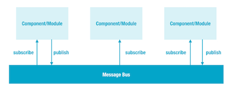

The HTML5 Player V3 incorporates the use of a message bus to handle events.
The Ooyala player architecture enables you to use a message bus to handle events. The message bus enables publish/subscribe messaging and simplifies interaction with the player. Any number of modules can subscribe to messages and publish messages. As illustrated in the following figure, the message bus routes published messages to modules that have subscribed to those messages.

Each player is independent with regards to the message bus. There is one message bus per each player. Each component decides which message it wants to communicate to or listen to via the message bus.